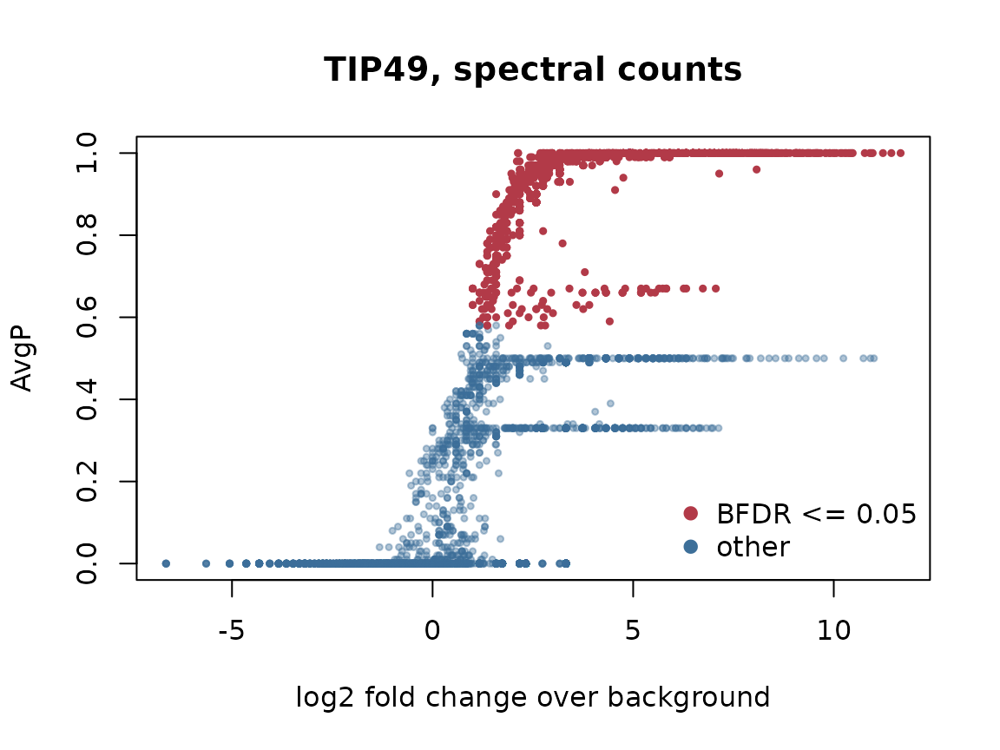

Introduction
In an affinity purification-mass spectrometry (AP-MS) experiment, a tagged protein, the bait, is purified from cell lysate together with the proteins bound to it, and mass spectrometry identifies and quantifies these preys. Most preys in a purification are not genuine interaction partners: abundant proteins, proteins binding the beads or the tag, and carry-over appear in almost every purification. Negative-control purifications, without the bait or with the tag alone, show what this background looks like.
SAINT (Significance Analysis of INTeractome, Choi et al. 2011) scores
each bait-prey pair. It models the abundance of a prey in the
purifications of a bait as coming either from a true interaction or from
the background, estimates the background distribution of each prey from
the negative controls, and returns the probability that the interaction
is true (AvgP) and a Bayesian false discovery rate
(BFDR). SAINTexpress (Teo et al. 2014) is the faster,
simplified implementation of SAINT. It has a model for spectral counts
and one for intensities, and can use known prey-prey interactions as a
prior.
Use SAINT when you have AP-MS (or proximity labelling) data with
negative controls and want to separate interaction partners of each bait
from background, for example to filter interactions at
BFDR <= 0.05 before building a network. SAINT does not
compare abundances between conditions; that is a differential-expression
question.
SAINTexpress has so far been available as a C++ program, run outside R on text files. saintexpress implements both of its models in R, so interaction scoring can be part of an R analysis, run on every platform, and start from data already held in Bioconductor containers. The scores agree with the native SAINTexpress 3.6.3 program (see below).
Related Bioconductor packages:
-
artMS converts MaxQuant results into the input
files of SAINTexpress (
artmsEvidenceToSaintExpress()); the scoring itself then needs the native program. saintexpress can score these tables directly in R. - apComplex estimates protein complex membership, as a bipartite graph of proteins and complexes, from bait-prey observations. It answers a different question: which proteins form complexes, rather than how likely each single bait-prey interaction is. Interactions filtered by SAINT can be its input.
The TIP49 data
saintexpress ships the example data of SAINTexpress: an AP-MS experiment on human protein complexes containing TIP49a/TIP49b (RUVBL1/RUVBL2), with spectral counts for 27 baits in 35 purifications and 9 negative controls (Sardiu et al. 2008). The files are the headerless tables native SAINTexpress reads.
library(saintexpress)
tip49 <- system.file("extdata", "tip49", package = "saintexpress")
read_dat <- function(file) {
read.delim(file.path(tip49, file), header = FALSE, stringsAsFactors = FALSE)
}
si <- list(
inter = read_dat("inter.dat"),
prey = read_dat("prey.dat"),
bait = read_dat("bait.dat")
)
lapply(si, head, 3)
#> $inter
#> V1 V2 V3 V4
#> 1 ARP5 ACTR5 ACTR5 417
#> 2 ARP5 ACTR5 RUVBL2 73
#> 3 ARP5 ACTR5 RUVBL1 50
#>
#> $prey
#> V1 V2
#> 1 ACTR5 607
#> 2 RUVBL2 463
#> 3 RUVBL1 456
#>
#> $bait
#> V1 V2 V3
#> 1 ARP5 ACTR5 T
#> 2 ARP6_1 ACTR6 T
#> 3 ARP6_2 ACTR6 Trun_saint() takes a list of three data frames. Their
columns are matched by name when all required names are present,
otherwise by position, as here.
| Table | Column | Type | Content |
|---|---|---|---|
inter |
ipId |
character | Purification (IP) |
baitId |
character | Bait of the IP | |
preyId |
character | Prey | |
quant |
numeric | Spectral count (>= 0) or intensity (> 0) | |
prey |
preyId |
character | Prey, unique |
preyLength |
numeric | Protein length (optional, not used) | |
preyGeneId |
character | Gene name (optional, defaults to preyId) |
|
bait |
ipId |
character | Purification, unique |
baitId |
character | Bait; replicate IPs share it | |
CorT |
character |
T for a bait IP, C for a negative
control |
validate_saint_input() checks the tables. If it passes,
run_saint() accepts them; otherwise it names the table and
column at fault.
validate_saint_input(si, mode = "spc")Spectral-count scoring
scores <- run_saint(si, mode = "spc")
dim(scores)
#> [1] 5521 17
names(scores)
#> [1] "Bait" "Prey" "PreyGene" "Spec"
#> [5] "SpecSum" "AvgSpec" "NumReplicates" "ctrlCounts"
#> [9] "AvgP" "MaxP" "TopoAvgP" "TopoMaxP"
#> [13] "SaintScore" "logOddsScore" "FoldChange" "BFDR"
#> [17] "boosted_by"Each row is a bait-prey pair. The columns follow the native
list.txt:
| Column | Content |
|---|---|
Spec, SpecSum, AvgSpec,
NumReplicates
|
Prey counts in the replicate IPs of the bait, their sum and mean, number of replicates |
ctrlCounts |
Prey counts in the control IPs |
AvgP, MaxP
|
Probability of a true interaction, averaged over replicates and the highest one |
TopoAvgP, TopoMaxP,
SaintScore, boosted_by
|
Scores with the prey-prey prior (see below) |
logOddsScore |
Lowest replicate log odds of true vs background |
FoldChange |
Mean count divided by the background mean |
BFDR |
Bayesian false discovery rate |
The highest-scoring preys of the bait RUVBL1 include its partner RUVBL2 and subunits of chromatin-remodelling complexes that contain RUVBL1, such as SRCAP, EP400 and TRRAP, all absent or nearly absent from the controls:
ruvbl1 <- scores[scores$Bait == "RUVBL1", ]
head(ruvbl1[order(-ruvbl1$AvgP, -ruvbl1$FoldChange),
c("Prey", "Spec", "ctrlCounts", "AvgP", "FoldChange", "BFDR")], 10)
#> Prey Spec ctrlCounts AvgP FoldChange BFDR
#> 4516 TRRAP 54 0|0|0|0|0|0|0|0|0 1 540.00 0
#> 4455 RUVBL2 415 6|0|1|0|0|0|0|0|0 1 533.57 0
#> 4496 SRCAP 53 0|0|0|0|0|0|0|0|0 1 530.00 0
#> 4515 EP400 48 0|0|0|0|0|0|0|0|0 1 480.00 0
#> 4459 ACTL6A 28 0|0|0|0|0|0|0|0|0 1 280.00 0
#> 4499 DMAP1 25 0|0|0|0|0|0|0|0|0 1 250.00 0
#> 4461 ACTB 21 0|0|0|0|0|0|0|0|0 1 210.00 0
#> 4523 C2orf44 20 0|0|0|0|0|0|0|0|0 1 200.00 0
#> 4488 ACTR6 19 0|0|0|0|0|0|0|0|0 1 190.00 0
#> 4500 WDR92 18 0|0|0|0|0|0|0|0|0 1 180.00 0At a Bayesian FDR of 5%:
hits <- scores[scores$BFDR <= 0.05, ]
nrow(hits)
#> [1] 1666
head(sort(table(hits$Bait), decreasing = TRUE))
#>
#> TP53 LIN9 ZNHIT6 TFPT H2AFZ UXT
#> 323 266 162 117 89 82
is_hit <- scores$BFDR <= 0.05
plot(
log2(scores$FoldChange), scores$AvgP,
pch = 19, cex = 0.5,
col = ifelse(is_hit, "#B23A48", "#3D6F9966"),
xlab = "log2 fold change over background", ylab = "AvgP",
main = "TIP49, spectral counts"
)
legend("bottomright", legend = c("BFDR <= 0.05", "other"),
col = c("#B23A48", "#3D6F99"), pch = 19, bty = "n")
Intensity scoring
mode = "int" uses the SAINTexpress intensity model:
intensities are log transformed and standardised, and both the true and
the background distribution are normal. Here the TIP49 counts stand in
for intensities, as in the SAINTexpress example.
scores_int <- run_saint(si, mode = "int")
head(scores_int[order(-scores_int$AvgP),
c("Bait", "Prey", "AvgIntensity", "AvgP", "BFDR")])
#> Bait Prey AvgIntensity AvgP BFDR
#> 1004 RP11-529I10.4 RUVBL1 55.020 1.000 0
#> 2019 H2AFZ RUVBL1 57.143 1.000 0
#> 4455 RUVBL1 RUVBL2 54.684 1.000 0
#> 5456 ZNHIT2 RUVBL2 125.805 1.000 0
#> 5457 ZNHIT2 RUVBL1 123.764 1.000 0
#> 4527 RUVBL2 RUVBL1 36.361 0.999 0Agreement with native SAINTexpress
inst/extdata/tip49 also holds the list.txt
files written by the native SAINTexpress 3.6.3 programs for these inputs
(inst/scripts/tip49.md describes how). The R scores agree
with them; the package tests check this for both models and both
optimizers.
native_diff <- function(r_scores, file) {
native <- read.delim(file.path(tip49, file), stringsAsFactors = FALSE)
both <- merge(native, r_scores, by = c("Bait", "Prey"), suffixes = c("_native", "_r"))
vapply(c("AvgP", "MaxP", "SaintScore", "BFDR"), function(column) {
max(abs(both[[paste0(column, "_native")]] - both[[paste0(column, "_r")]]))
}, numeric(1))
}
rbind(
spc = native_diff(scores, "list_spc.txt"),
int = native_diff(scores_int, "list_int.txt")
)
#> AvgP MaxP SaintScore BFDR
#> spc 0.000 0.000 0.000 0.00
#> int 0.004 0.004 0.004 0.02The spectral-count scores match the native output exactly (both are rounded to two decimals). The intensity scores differ by a few thousandths in the probabilities and by up to 0.02 in BFDR, from small numerical differences between the two implementations of the intensity model.
Optimizer and tuning arguments
optimizer. The model parameters are
fitted by maximum likelihood. "base" (default) uses
stats::optim() with method L-BFGS-B. "nloptr"
uses the COBYLA algorithm of the NLopt library, like native
SAINTexpress, and needs the nloptr package. Both give nearly the same
scores:
if (requireNamespace("nloptr", quietly = TRUE)) {
scores_nloptr <- run_saint(si, mode = "spc", optimizer = "nloptr")
max(abs(scores_nloptr$AvgP - scores$AvgP))
}
#> [1] 0R (default 100) is the most replicates
averaged into AvgP: with R = 1,
AvgP is the probability of the best replicate, equal to
MaxP. This rewards interactions seen strongly in a single
replicate.
scores_r1 <- run_saint(si, mode = "spc", R = 1)
all(scores_r1$AvgP == scores_r1$MaxP)
#> [1] TRUE
c(default = sum(scores$BFDR <= 0.05), R1 = sum(scores_r1$BFDR <= 0.05))
#> default R1
#> 1666 2821L (default 100, spectral counts only)
is the number of control IPs used for the background of each prey: for
every prey the L controls with the highest counts are
taken. A smaller L makes the background stricter when some
controls are much cleaner than others. TIP49 has 9 controls, so the
default uses all of them.
scores_l4 <- run_saint(si, mode = "spc", L = 4)
c(default = sum(scores$BFDR <= 0.05), L4 = sum(scores_l4$BFDR <= 0.05))
#> default L4
#> 1666 1345p2p_mapping gives known prey-prey
interactions, for example from protein complex databases. A prey whose
known partners are also detected with the bait gets a higher topology
score TopoAvgP; SaintScore is the larger of
AvgP and TopoAvgP, and boosted_by
lists the partners. The mapping is a list with one element per row of
the prey table, holding the row numbers of the linked preys. Here,
members of the INO80 and SRCAP complexes are linked:
complexes <- list(
INO80 = c("RUVBL1", "RUVBL2", "ACTR5", "ACTR8", "INO80B", "INO80C", "INO80D",
"INO80E", "NFRKB", "TFPT", "MCRS1", "UCHL5", "YY1", "ACTL6A"),
SRCAP = c("SRCAP", "ZNHIT1", "VPS72", "H2AFZ", "DMAP1", "ACTL6A", "RUVBL1",
"RUVBL2")
)
prey_ids <- si$prey[[1]]
p2p_mapping <- lapply(prey_ids, function(prey) {
partners <- unlist(complexes[vapply(complexes, function(x) prey %in% x, logical(1))])
match(setdiff(unique(partners), prey), prey_ids)
})
scores_topo <- run_saint(si, mode = "spc", p2p_mapping = p2p_mapping)
boosted <- scores_topo[scores_topo$TopoAvgP > scores_topo$AvgP, ]
head(boosted[, c("Bait", "Prey", "AvgP", "TopoAvgP", "SaintScore", "boosted_by")])
#> Bait Prey AvgP TopoAvgP SaintScore
#> 29 ACTR5 YY1 0.99 1.00 1.00
#> 33 ACTR5 H2AFZ 0.48 1.00 1.00
#> 133 ACTR6 H2AFZ 0.49 0.67 0.67
#> 885 ACTR8 H2AFZ 0.46 0.50 0.50
#> 1006 RP11-529I10.4 ACTL6A 0.99 1.00 1.00
#> 1019 RP11-529I10.4 YY1 0.90 1.00 1.00
#> boosted_by
#> 29 RUVBL1|RUVBL2|ACTR5|ACTR8|INO80B|INO80C|INO80D|INO80E|NFRKB|TFPT|MCRS1|UCHL5|ACTL6A|
#> 33 SRCAP|ZNHIT1|VPS72|DMAP1|ACTL6A|RUVBL1|RUVBL2|
#> 133 SRCAP|ZNHIT1|VPS72|DMAP1|ACTL6A|RUVBL1|RUVBL2|
#> 885 SRCAP|ZNHIT1|VPS72|DMAP1|ACTL6A|RUVBL1|RUVBL2|
#> 1006 RUVBL1|RUVBL2|ACTR5|ACTR8|INO80B|INO80C|INO80D|INO80E|NFRKB|TFPT|MCRS1|UCHL5|YY1|SRCAP|ZNHIT1|VPS72|H2AFZ|DMAP1|
#> 1019 RUVBL1|RUVBL2|ACTR5|ACTR8|INO80B|INO80C|INO80D|INO80E|NFRKB|TFPT|MCRS1|UCHL5|ACTL6A|Data in ExpressionSet, SummarizedExperiment, QFeatures or anndataR
Quantitative proteomics data are often held in a container: an
ExpressionSet, a SummarizedExperiment, an
assay of a QFeatures object, or an anndataR
object when data are exchanged with Python. saintexpress depends on none
of them. Each holds the three pieces run_saint() needs:
| Piece | ExpressionSet | SummarizedExperiment, QFeatures assay | anndataR |
|---|---|---|---|
| Quantity matrix, preys x IPs | exprs(eset) |
assay(se) |
t(adata$X) |
| Sample table, one row per IP | pData(eset) |
colData(se) |
adata$obs |
| Feature table, one row per prey | fData(eset) |
rowData(se) |
adata$var |
The function below scores an ExpressionSet and returns
the scores as an ExpressionSet with preys in rows and baits
in columns: exprs() holds AvgP, and
MaxP, SaintScore, FoldChange and
BFDR are further assay data elements. It needs the Biobase
package.
run_saint_eset <- function(eset, bait = "bait", cort = "CorT",
mode = "spc", ...) {
quant <- Biobase::exprs(eset)
samples <- Biobase::pData(eset)
detected <- which(!is.na(quant) & quant > 0, arr.ind = TRUE)
si <- list(
inter = data.frame(
ipId = colnames(quant)[detected[, 2]],
baitId = samples[[bait]][detected[, 2]],
preyId = rownames(quant)[detected[, 1]],
quant = quant[detected]
),
prey = data.frame(preyId = rownames(quant)),
bait = data.frame(ipId = colnames(quant), baitId = samples[[bait]],
CorT = samples[[cort]])
)
scores <- run_saint(si, mode = mode, ...)
baits <- sort(unique(scores$Bait))
cell <- cbind(match(scores$Prey, rownames(quant)), match(scores$Bait, baits))
to_matrix <- function(column) {
m <- matrix(NA_real_, nrow(quant), length(baits),
dimnames = list(rownames(quant), baits))
m[cell] <- scores[[column]]
m
}
Biobase::ExpressionSet(
assayData = Biobase::assayDataNew(
exprs = to_matrix("AvgP"),
MaxP = to_matrix("MaxP"),
SaintScore = to_matrix("SaintScore"),
FoldChange = to_matrix("FoldChange"),
BFDR = to_matrix("BFDR")
),
phenoData = Biobase::AnnotatedDataFrame(
data.frame(bait = baits, row.names = baits)
),
featureData = Biobase::featureData(eset)
)
}We put the TIP49 counts into an ExpressionSet and score
it:
counts <- tapply(
si$inter[[4]],
list(factor(si$inter[[3]], levels = si$prey[[1]]),
factor(si$inter[[1]], levels = si$bait[[1]])),
sum
)
eset <- Biobase::ExpressionSet(
counts,
phenoData = Biobase::AnnotatedDataFrame(
data.frame(bait = si$bait[[2]], CorT = si$bait[[3]],
row.names = si$bait[[1]])
)
)
eset
#> ExpressionSet (storageMode: lockedEnvironment)
#> assayData: 1207 features, 44 samples
#> element names: exprs
#> protocolData: none
#> phenoData
#> sampleNames: ARP5 ARP6_1 ... 9 (44 total)
#> varLabels: bait CorT
#> varMetadata: labelDescription
#> featureData: none
#> experimentData: use 'experimentData(object)'
#> Annotation:
scores_eset <- run_saint_eset(eset)
scores_eset
#> ExpressionSet (storageMode: lockedEnvironment)
#> assayData: 1207 features, 27 samples
#> element names: BFDR, exprs, FoldChange, MaxP, SaintScore
#> protocolData: none
#> phenoData
#> sampleNames: ACTR5 ACTR6 ... ZNHIT6 (27 total)
#> varLabels: bait
#> varMetadata: labelDescription
#> featureData: none
#> experimentData: use 'experimentData(object)'
#> Annotation:
Biobase::assayDataElement(scores_eset, "BFDR")[c("ACTR5", "ACTR8", "INO80B"),
c("RUVBL1", "RUVBL2", "INO80B")]
#> RUVBL1 RUVBL2 INO80B
#> ACTR5 0.00 0 0.00
#> ACTR8 0.00 0 0.00
#> INO80B 0.37 0 0.37A SummarizedExperiment, or an assay of a
QFeatures object, converts to an ExpressionSet
with the coercion that the SummarizedExperiment package provides:
scores_se <- run_saint_eset(as(se, "ExpressionSet"))See also
For running the original native SAINTexpress program on the same
input, see the companion package saintexpressbin.
References
- Choi H, Larsen B, Lin ZY, Breitkreutz A, Mellacheruvu D, Fermin D, Qin ZS, Tyers M, Gingras AC, Nesvizhskii AI (2011). SAINT: probabilistic scoring of affinity purification-mass spectrometry data. Nature Methods 8, 70-73. doi:10.1038/nmeth.1541
- Teo G, Liu G, Zhang J, Nesvizhskii AI, Gingras AC, Choi H (2014). SAINTexpress: improvements and additional features in Significance Analysis of INTeractome software. Journal of Proteomics 100, 37-43. doi:10.1016/j.jprot.2013.10.023
- Sardiu ME, Cai Y, Jin J, Swanson SK, Conaway RC, Conaway JW, Florens L, Washburn MP (2008). Probabilistic assembly of human protein interaction networks from label-free quantitative proteomics. PNAS 105, 1454-1459. doi:10.1073/pnas.0706983105
Session information
sessionInfo()
#> R version 4.6.2 (2026-10-29)
#> Platform: x86_64-pc-linux-gnu
#> Running under: Ubuntu 24.04.5 LTS
#>
#> Matrix products: default
#> BLAS: /usr/lib/x86_64-linux-gnu/openblas-pthread/libblas.so.3
#> LAPACK: /usr/lib/x86_64-linux-gnu/openblas-pthread/libopenblasp-r0.3.26.so; LAPACK version 3.12.0
#>
#> locale:
#> [1] LC_CTYPE=C.UTF-8 LC_NUMERIC=C LC_TIME=C.UTF-8
#> [4] LC_COLLATE=C.UTF-8 LC_MONETARY=C.UTF-8 LC_MESSAGES=C.UTF-8
#> [7] LC_PAPER=C.UTF-8 LC_NAME=C LC_ADDRESS=C
#> [10] LC_TELEPHONE=C LC_MEASUREMENT=C.UTF-8 LC_IDENTIFICATION=C
#>
#> time zone: UTC
#> tzcode source: system (glibc)
#>
#> attached base packages:
#> [1] stats graphics grDevices utils datasets methods base
#>
#> other attached packages:
#> [1] saintexpress_0.99.4
#>
#> loaded via a namespace (and not attached):
#> [1] cli_3.6.6 knitr_1.52 rlang_1.3.0
#> [4] xfun_0.62 otel_0.3.0 generics_0.1.4
#> [7] textshaping_1.0.5 jsonlite_2.0.0 htmltools_0.5.9
#> [10] ragg_1.5.2 sass_0.4.10 rmarkdown_2.32
#> [13] Biobase_2.72.0 evaluate_1.0.5 jquerylib_0.1.4
#> [16] fastmap_1.2.0 yaml_2.3.12 lifecycle_1.0.5
#> [19] compiler_4.6.2 fs_2.1.0 htmlwidgets_1.6.4
#> [22] systemfonts_1.3.2 digest_0.6.39 nloptr_2.2.1
#> [25] R6_2.6.1 bslib_0.12.0 tools_4.6.2
#> [28] pkgdown_2.2.1 BiocGenerics_0.58.1 cachem_1.1.0
#> [31] desc_1.4.3